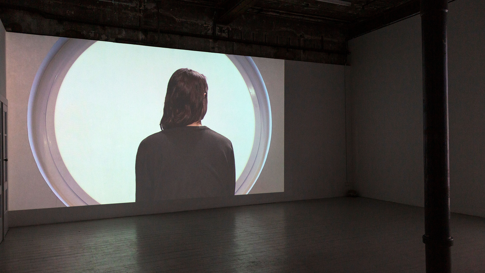
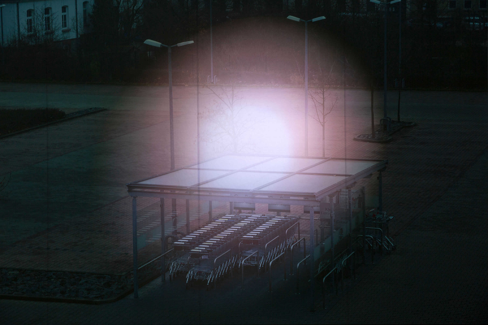
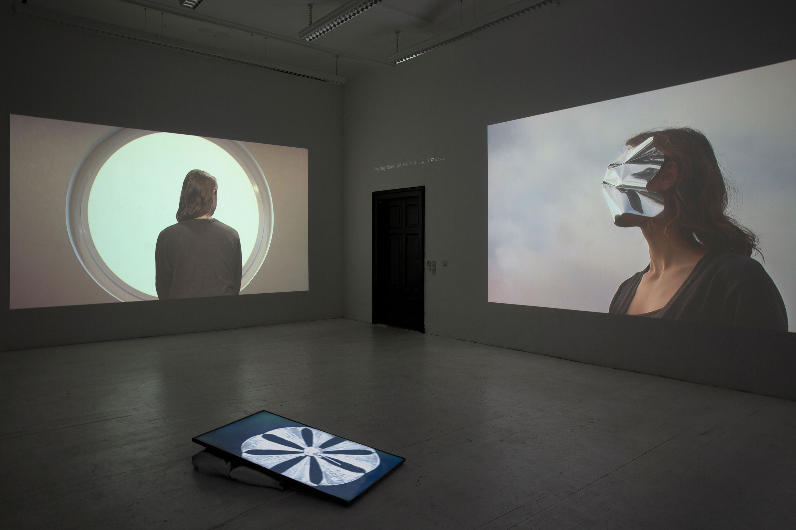
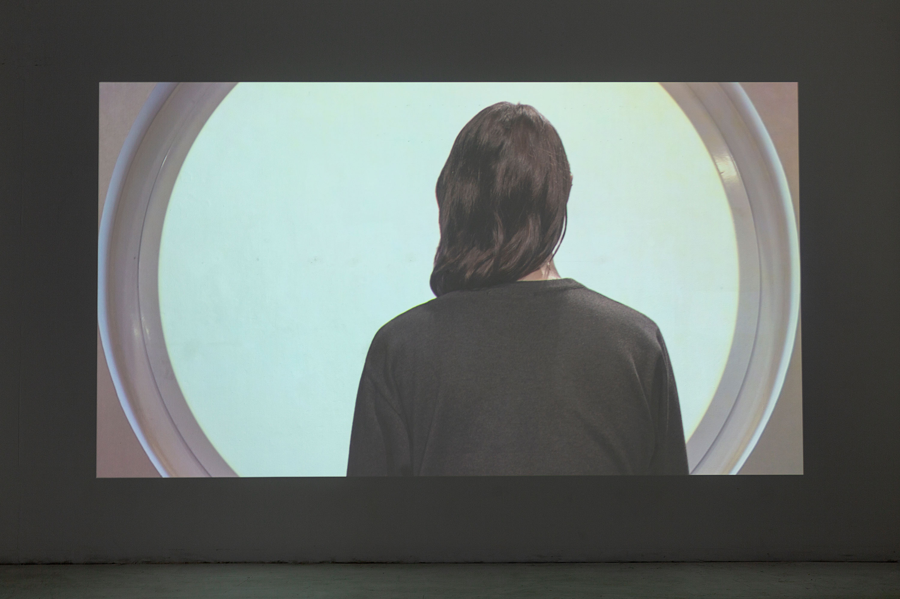
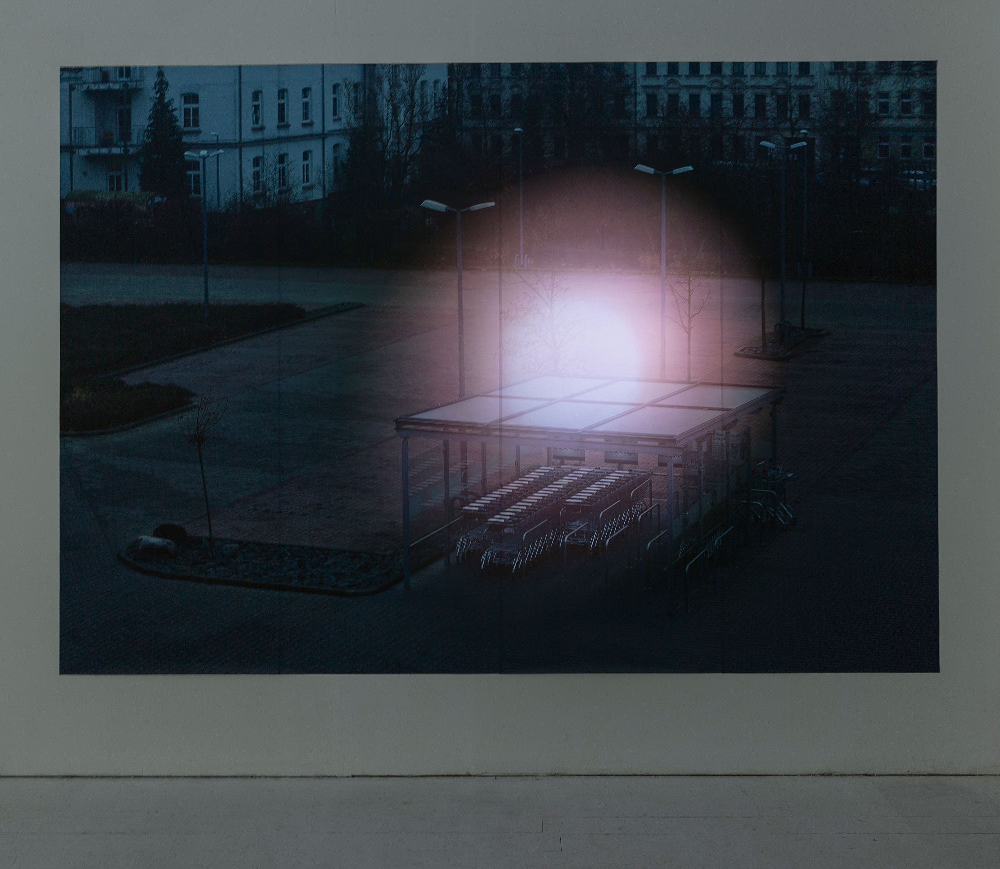

Vues d'installation à la Galerie Intershop, Leipzig
The Screen Under My Eyelids
2020
3 vidéos numériques, 1 son stéréo, 1 impression giclée sur papier peint avec lumières projetée, 2 textes en vinyle
Et s'il n'y avait plus de nuit ?
Au fil des siècles, nous avons construit la vie autour de deux temporalités : la dualité du jour et de la nuit. Cela remonte à la rotation de la terre, qui, comme toute autre forme de vie, a donné aux êtres humains un rythme précis. La journée active était suivie de la nuit, caractérisée par le sommeil, le repos, les célébrations et autres activités qui n'étaient pas possibles pendant la journée. Cependant, la nuit disparaît : l'opacité, l'ombre et l'obscurité s'estompent. La société contemporaine construit un monde qui fonctionne 24 heures sur 24 et qui conduit à une forme de temps continu dans lequel les séparations entre activité et repos, travail et loisirs, vie professionnelle et vie privée s'effacent. L'insomnie nous est révélée lors des impasses, mais aussi comme conséquence du travail perpétuel et donc, une réponse à la possibilité omniprésente de la visibilité.
The Screen Under My Eyelids rassemble des œuvres qui explorent les états mentaux et sociaux de l'insomnie. Conçue à partir de vidéos numériques, d'enregistrements audio et d'impressions à jet d'encre, l'exposition explore une forme temporelle entre l'arrêt et le mouvement. Les œuvres font écho à la forme continue du temps dans un état insomniaque, ainsi qu'à un monde dans une fonctionnalité perpétuelle. En ce sens, la lumière est devenue un vecteur esthétique pour les mécanismes qui structurent la société contemporaine. Une des œuvres présentées dans l'exposition est une vidéo trouvée d'un satellite miroir (Znamya 2.5, une expérience dans les années 90) qui a pour fonction de faire dévier la lumière du soleil vers la Terre. Elle évoque le désir ambigu d'étendre la temporalité diurne à un jour sempiternel.
Deflection (extrait), 2020, 11:50 min., série The Screen Under My Eyelids
Windows (extrait), 2020, 5:25 min., série The Screen Under My Eyelids
Merci beaucoup :
Paula Abalos, Sabrina Asche, Anselm Benedikt Hötte, Prof. Joachim Blank, Prof. Dr. Beatrice von Bismarck, Wut Chalanant, Jennifer Demmel, Michael Ehritt, Elizabeth Gerdeman, Andreas Giesecke, Andrea Garcia Vasquez, Mandy Gehrt, Florian Krämer, Mario Kühne, Judith Lavagna, Bernadette Keating, Adrian Kleinlosen, Marie-Eve Levasseur, Kati Liebert, Michael Ludwig, Carsten Möller, Nico Nice, Dr. Michael Ohme, Max Schneider, Tobias Richter, Aaron Shoichet, Simon Thiou, Halle 14 Zentrum für Zeitgenössische Kunst and Sheila Hugh Mackay Foundation.




Vues d'exposition à l'Académie des beaux-arts de Leipzig